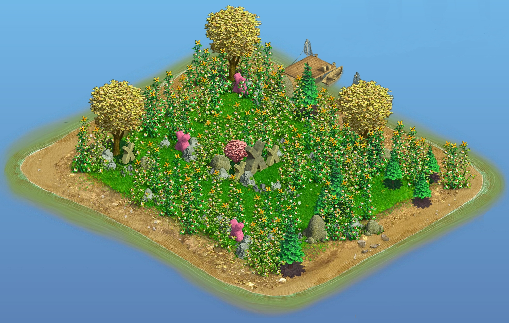

Получено: файл; исходный URL. Скриншот локации; оригинал 1973×1254 px.


Остров Х
Браузерная социальная версия; снимок 2013- Тип
- Острова
- Версия и дата
- Браузерная социальная версия; снимок 2013
Данные по источнику · Браузерная социальная версия · снимок 2013
Предварительно: один материал ЗомбиСити / зеркало; требует сверки. Требуется сверка.
- Ресурсы (источник)
- Бревна Камни Золиан
- Описание и доступ (исторический источник)
- На Острове Х вы соберете ваш первый Золиан, если не хотите ждать более 170 часов, запаситесь мгновенными удобрениями. С каменных букв Х на острове добываются Камни, их нельзя переставлять или класть на склад. Так же на Острове Х есть 2-е недостроенные пристани, которые ведут на Остров Веры и Остров Надежды.
- Пристань: стадия 1 (источник)
- 20 Брус секвойи + 10 Кварц + 15 Бумага; 100 опыта.
- Пристань: стадия 2 (источник)
- 3 компаса, 10 кирпичей, 150 брёвен пальмы; 300 опыта.
- Доступ
- Пристань с острова Любви.
- Расхождение версий
- ЗомбиСити: 150 брёвен пальмы на 2-й стадии пристани. Историческая статья «Мой Мир»: 120. Возможны различия платформ или редакций.
Данные по источнику · браузерная «Зомби Ферма» / «Зомби Мания»; платформа не уточнена · снимок каталога 10.12.2019; дата редакции неизвестна
Предварительно: Фанатский каталог; возможны общие картинки для разных локаций и зависимость от других источников.. Требуется сверка.
- Каталог
- В разделе «Домашние Острова Зомби Фермы» указана локация «Остров Х».
- Оговорка
- Каталог показывает название, картинку и ссылку; отдельная статья по этой ссылке не прочитана в рамках этого импорта. Условия доступа и версии требуют проверки.
- Сравнение снимков
- Эта же подпись, раздел и адрес картинки присутствуют в снимке того же каталога 14.09.2018; это не независимое подтверждение.
Связанные сущности
нет проверенных связей — требуется сверка.